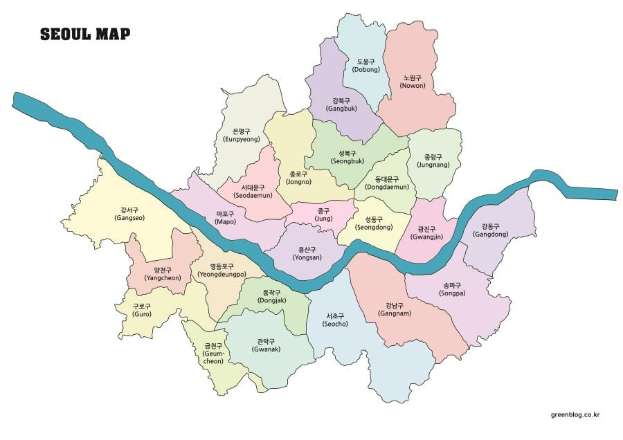
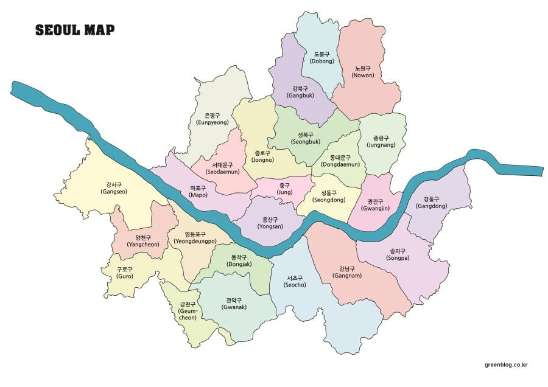

대한민국의 수도, 서울
 

서울은 대한민국의 수도이자 가장 큰 도시로, 동아시아의 중심지 중 하나입니다. 인구 약 1천만 명이 넘는 대도시로, 경제, 문화, 정치, 역사 등 다양한 분야에서 중요한 역할을 하고 있습니다.
서울은 효율적인 대중교통 시스템을 갖추고 있어 여행자들이 이동하기 편리합니다. 지하철, 버스, 택시 등의 다양한 교통수단을 이용할 수 있으며, 인천국제공항과 김포국제공항을 통해 전 세계와 연결됩니다.
역사와 전통
서울은 약 600년의 역사를 자랑하는 도시로, 조선 시대에 한양으로 불리며 수도로서 기능했습니다. 서울 곳곳에는 고궁과 유적지가 많아 전통과 역사를 느낄 수 있습니다. 대표적으로는 경복궁, 창덕궁, 창경궁, 덕수궁, 종묘 등이 있습니다. 이러한 궁궐들은 한국의 전통 건축 양식과 궁중 문화를 엿볼 수 있는 곳입니다.
현대와 미래
서울은 세계적인 대도시로, 현대적이고 미래 지향적인 모습을 가지고 있습니다. 고층 빌딩이 늘어선 강남, 첨단 기술과 IT 기업들이 모여 있는 디지털 미디어 시티(DMC), 한강을 따라 조성된 다양한 공원과 레저 시설들은 서울의 현대적이고 역동적인 면모를 보여줍니다.
문화와 예술
서울은 다채로운 문화와 예술의 중심지입니다. 다양한 공연장, 박물관, 갤러리가 있어 연중 다양한 문화 행사를 즐길 수 있습니다. 예술의 전당, 세종문화회관, 국립중앙박물관, 국립현대미술관 등은 꼭 방문해 볼 만한 장소입니다. 또한, 서울은 한류의 중심지로, K-pop, 한국 드라마, 영화 등의 인기를 통해 전 세계적으로 문화적 영향을 미치고 있습니다.
음식과 쇼핑
서울은 미식가들에게도 천국입니다. 전통 한식부터 현대적인 퓨전 요리까지 다양한 음식을 맛볼 수 있습니다. 특히, 한국의 대표적인 음식인 김치, 비빔밥, 불고기, 삼겹살, 떡볶이 등을 서울에서 즐길 수 있습니다. 또한, 서울의 쇼핑은 세계적 수준으로, 명동, 동대문, 강남 등에서 다양한 쇼핑을 즐길 수 있습니다.
자연과 레저
서울은 도시와 자연이 조화를 이루는 곳입니다. 한강을 따라 조성된 공원들은 시민들이 휴식을 취하고 레저 활동을 즐길 수 있는 공간을 제공합니다. 또한, 서울의 북악산, 남산, 인왕산 등의 산은 등산과 트레킹을 즐길 수 있는 좋은 장소입니다.